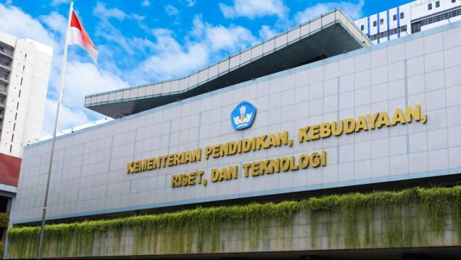

Sejarah Kementerian Pendidikan dan Kebudayaan
Pada awal kemerdekaan (1945-1950), pendidikan berfokus pada pembentukan identitas bangsa merdeka, dengan Ki Hadjar Dewantara sebagai Menteri Pengajaran pertama. Demokrasi Liberal (1951-1959) diwarnai ketidakstabilan politik, namun menghasilkan UU Pokok Pendidikan No. 4 Tahun 1950 sebagai dasar hukum pendidikan. Selama Demokrasi Terpimpin (1959-1966), kementerian dipecah menjadi beberapa menteri muda dalam struktur baru, di tengah situasi politik yang tegang. Di era Orde Baru (1966-1998), pendidikan berkembang pesat dengan kebijakan seperti EYD, OSIS, dan pembangunan infrastruktur pendidikan. Pada Era Reformasi (1998-2011), kementerian menjadi Departemen Pendidikan Nasional dengan kebijakan baru seperti UU Pendidikan 2003, BOS, dan Ujian Nasional. Mulai 2011 hingga sekarang, kementerian berubah menjadi Kemendikbudristek, dipimpin oleh Nadiem Makarim sejak 2019.
Jadwal Pendaftaran dan Seleksi Beasiswa Unggulan 2024
| Kegiatan | Jadwal Pelaksanaan Beasiswa Pegawai Kemendikbudristek | Jadwal Pelaksanaan Beasiswa Masyarakat Berprestasi |
|---|---|---|
| Pendaftaran | 02 Mei 2024 s.d 06 Juli 2024 | 01 Juli 2024 s.d 14 Juli 2024 |
| Seleksi Tahap I | Akan diinformasikan pada laman https://beasiswaunggulan.kem dikbud.go.id/ | 15 Juli 2024 s.d 04 Agustus 2024 |
| Pengumuman Hasil Seleksi Tahap I | Akan diinformasikan pada laman https://beasiswaunggulan.kem dikbud.go.id/ | 09 Agustus 2024 |
| Seleksi Tahap II | Akan diinformasikan pada laman https://beasiswaunggulan.kem dikbud.go.id/ | 12 Agustus 2024 s.d 31 Agustus 2024 |
| Pengumuman Hasil Seleksi Tahap II | Akan diinformasikan pada laman https://beasiswaunggulan.kem dikbud.go.id/ | 10 September 2024 |
| Pembekalan dan Penjelasan Teknis Penanda tanganan Kontrak | Akan diinformasikan pada laman https://beasiswaunggulan.kem dikbud.go.id/ | Akan diinformasikan pada laman https://beasiswaunggulan.kem dikbud.go.id/ |